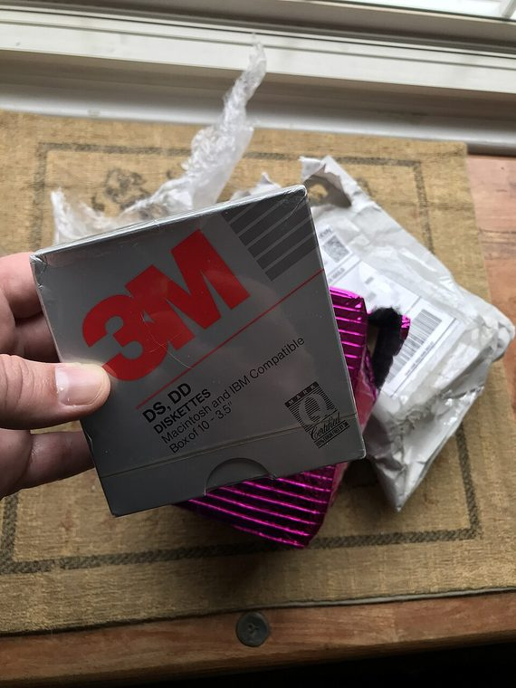

[ IDENTIFIED SYSTEM // TANDY 1000 HX ]
Tandy 1000 HX System Enclosure
Compact low-profile desktop system unit with internal 3.5-inch diskette drive; approximate dimensions 12.2 × 12.8 × 3.1 in (W × D × H).

MODEL / REVISION BOUNDARY: HX is a distinct 1000 EX-derived system and shipped in different memory/drive and regional configurations. Identify catalog number and ROM/board revision before repair or compatibility claims.
Enclosure specifications
| Exact model / generation | Tandy 1000 HX, Radio Shack catalog number 25-1053 (1987); not 1000 EX or later HX upgrade chassis. |
|---|---|
| External dimensions | Approximately 12.2 × 12.8 × 3.1 in (W × D × H) for the system case; allow rear clearance for the proprietary edge connectors and regional AC cord. |
| Form factor / board layout | Compact low-profile desktop with Tandy-specific board, integrated keyboardless case and proprietary expansion connector arrangement; not ATX or standard ISA-slot case. |
| Proprietary power supply | Internal Radio Shack/Tandy-specific AC power supply, board connector and compact thermal layout; not ATX compatible. Retain the original rating and ventilation clearances. |
| External bays / ports | No standard external drive bays. Rear Tandy bus, video, serial/parallel and joystick connectors serve external peripherals; expansion adapter/caddy is separate. |
| Internal bays / mounts | One built-in 3.5-inch 720-KB diskette drive in stock HX configuration; second-drive/hard-disk expansion is not a standard front bay and requires model-specific options/modification. |
| Service / compatibility | Use the HX Technical Reference and user manual for board, ROM, drive and connector service. Check exact 25-1053 unit, option card/caddy and drive retrofit; do not assume EX or 1000-family panels interchange. |
| Revision identification | HX is a distinct 1000 EX-derived system and shipped in different memory/drive and regional configurations. Identify catalog number and ROM/board revision before repair or compatibility claims. |
Service, restoration & fit notes
Use the HX Technical Reference and user manual for board, ROM, drive and connector service. Check exact 25-1053 unit, option card/caddy and drive retrofit; do not assume EX or 1000-family panels interchange.
Internal Radio Shack/Tandy-specific AC power supply, board connector and compact thermal layout; not ATX compatible. Retain the original rating and ventilation clearances.
- Record the full model/type label, board and power-supply assembly numbers, drive labels and manual revision before disassembly.
- Preserve original shields, brackets, hinges, feet, keyboard/CRT harnesses and proprietary fasteners with this exact enclosure; do not assume contemporary PC standards apply.
- Dimensions are approximate where noted; measure the actual specimen and leave clearance for cables, vents, lids/handles and attached peripherals.
Manufacturer & archival manual citations
- Tandy 1000 HX Technical Reference Manual — ManualsLib manual archiveTandy technical reference for the exact HX hardware and configuration.
- Radio Shack Tandy 1000 Computer Service Manual (1985) — Internet ArchiveRadio Shack/Tandy family service manual for series context; the HX Technical Reference remains the model-specific authority.
Manuals may cover only a stated revision or configuration; compare the title page and machine labels before applying procedures.